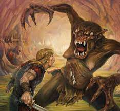

Introduction
The epic poem Beowulf is one of the oldest in medieval European literature where Beowulf faces Grendel, the ogre, and there are battles, warriors, and numerous creatures. Beowulf, the warrior, fights for the good of all, and he is a brave battle-hardened leader who kills various ferocious beats. The Danish king reigned during the day, while Grendel reigned during the night and terrorized the people. One of the main themes in the poem is bravery, strength, and courage in warriors. The heroes abide by the heroic code and fight courageously to celebrate when they die with heroism. Beowulf is a heroic ideal, and the poem mentions warriors and heroes who are well respected in the poet’s imagined society as they are worthy of praise.
